03 · Technical core
Finding the User & Navigating A → B
Page summary0:00
Navigation from A to B requires two linked problems: localization determines the current position/orientation, and path planning determines how to reach the destination.
Approach A — QR control points + IMU
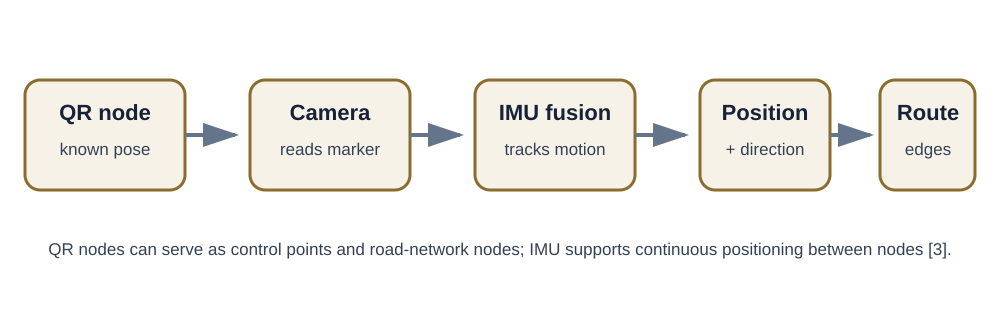
Liu and Zhang propose using QR codes as known indoor nodes/control points. Each node can carry or reference known position and pose information. When the camera observes the node, the system can obtain an absolute position and direction; IMU fusion supports positioning as the device moves. Edges connecting nodes form an indoor road network that can be used for path planning. [3]
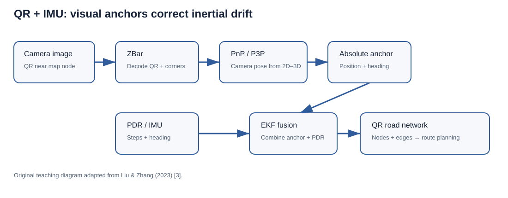
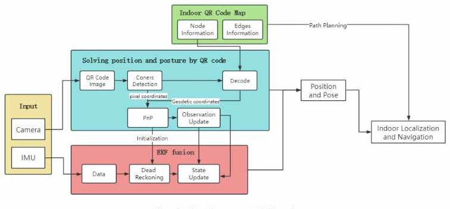
Implementation details from the QR study
1 · Building the QR code map
The indoor path network is derived from the building's design plan. Shops, doors, intersections, landmarks, elevators and stairs become nodes, and traversable corridors become edges. A QR code is installed at every node, and the geodetic 3D coordinates of its four corners are surveyed in advance (for example with a total station). [3]
| Node record (Table 1 in [3]) | Edge record (Table 2 in [3]) |
|---|---|
| Unique ID · geodetic coordinates of the four QR corners · floor · type (merchant, stairs, elevator, door, intersection, landmark) · adjacent edges · typically reachable nodes · position offset to a walkable location | Unique ID · start node · end node · length · width · list of points on the path centerline |
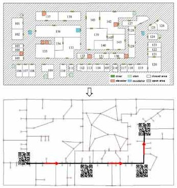
2 · Absolute pose from one QR code
The ZBar library detects the code and returns the pixel coordinates of its four corners, (ua,va) … (ud,vd). Decoding the payload gives the surveyed geodetic coordinates of the same four corners. This yields four 2D–3D pairs. With a calibrated camera, the paper solves P3P on three pairs and uses the fourth to pick the correct solution. It then recovers the camera-to-world transform (Rw2c, Tw2c) with an ICP alignment step. Because the camera and IMU are rigidly mounted with a calibrated offset (Rc2b, Tc2b), the IMU's absolute pose follows directly: [3]
R_w2b = R_w2c × R_c2b
T_w2b = T_w2c + R_w2b × T_c2bTechnical deep dive: PDR step model and EKF equations (optional)
3 · Pedestrian dead reckoning (PDR) between codes
Steps are detected as peaks in the accelerometer signal. Step length uses the Weinberg model S = k · ⁴√(amax − amin), where k is a per-user scale factor and amax, amin are the extreme accelerations within the step. Position is then propagated in east/north coordinates: [3]
E_k = E_(k-1) + d_(k-1) · sin θ_(k-1)
N_k = N_(k-1) + d_(k-1) · cos θ_(k-1)Each step adds a little length and heading error, so PDR drift grows the longer the user walks without a correction.
4 · EKF fusion
The state is X = [x, y, θ]ᵀ. The prediction step applies the PDR motion model with process-noise covariance Q. When a QR code is decoded, its pose (x⁻, y⁻, θ⁻) and the step length form the observation Z with noise covariance R. The noise variances come from the experimentally measured average errors of PDR and QR observations. The update is the standard EKF cycle: [3]
X'_k = A · X_(k-1) // predict state
P'_k = A · P_(k-1) · Aᵀ + Q // predict covariance
K_k = P'_k · Hᵀ · (H · P'_k · Hᵀ + R)⁻¹ // Kalman gain
X_k = X'_k + K_k · (Z_k − H · X'_k) // correct with QR observation
P_k = (I − K_k · H) · P'_k // updated covarianceHere A is the Jacobian of the motion model, with s·cos θ and −s·sin θ terms in its third column. The initial state comes from scanning a QR code near the starting point. [3] In plain terms: the Kalman gain decides how far to trust the new QR fix versus the dead-reckoning prediction. Because a QR fix is far more accurate than accumulated PDR, the filter snaps the estimate back toward the truth whenever a code is seen.
5 · Route planning and staying on the path
Route planning runs a Dijkstra-style shortest-path search on the QR map, with edge lengths as weights. At each decoded node, the device knows both its pose and the bearing to the next node. While walking between nodes it also applies a corridor constraint: if the dead-reckoned position drifts more than half the corridor width (w/2) from the planned centerline, it is projected perpendicularly back onto the centerline. The camera then starts actively looking for the next QR code. [3]
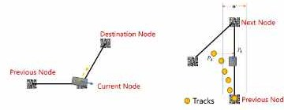
Approach B — visual place recognition with UNav
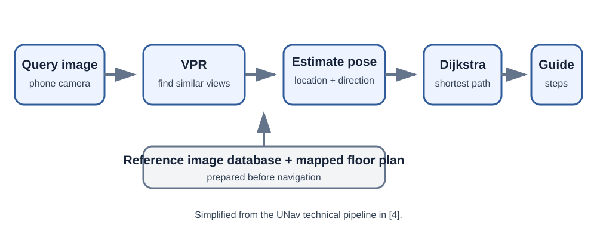
UNav takes a query image and uses visual place recognition (VPR) to retrieve visually similar images from a reference database. Locations associated with the retrieved images contribute to the position estimate. The technical paper also uses local image correspondences and a perspective-n-point (PnP) step to estimate direction. Once position and destination are known, Dijkstra's algorithm calculates a shortest path on the navigable map. [4]
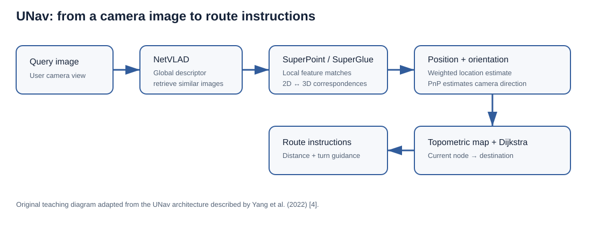
What VPR means in plain language
Imagine the building was photographed before deployment. Those reference photographs are associated with locations on a map. During navigation, the user's new camera image is compared with that visual memory. If the system finds reference images that look like the current view, their mapped locations provide evidence for where the user is. UNav uses NetVLAD to turn an image into a global descriptor for place retrieval. It then uses SuperPoint local features and SuperGlue matching to find correspondences between the query image and candidate reference images. A weighted estimate gives position, while PnP uses 2D–3D correspondences to estimate camera direction. The essential idea remains query image → similar mapped images → local feature matches → position and direction. [4]
How UNav is implemented, step by step
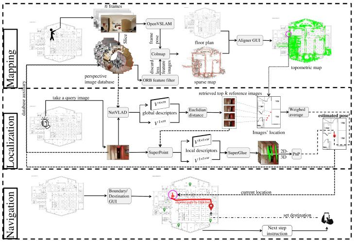
The system paper breaks UNav into three modules: mapping (done once, offline), localization (done for each query image) and navigation. [4]
Technical deep dive: how the UNav map is built (optional)
1 · Mapping (offline)
- Capture. A person walks the building with a consumer 360° camera (Insta360) held at about 6 ft, following a zigzag path and recording three loops: main hallways, all spaces with doors open, and all spaces with doors closed.
- Slicing. Each equirectangular frame is cut into m = 18 overlapping perspective images (640 × 360 px, 75° horizontal field of view), so ordinary pinhole-camera methods can be used.
- 3D reconstruction. OpenVSLAM (an ORB-SLAM2-based system that supports 360° video) estimates camera poses and a sparse 3D point cloud. COLMAP structure-from-motion then re-triangulates the map using SuperPoint features, so the 3D points carry the same 256-D local descriptors that will be used at query time.
- Floor-plan alignment. In a GUI, an operator clicks at least three corresponding points between the 3D map and the 2D floor plan. A least-squares transform
T = x Xᵀ (X Xᵀ)⁻¹(T ∈ ℝ2×3) projects SLAM coordinates onto the plan, ignoring the vertical axis. The result is a topometric map: a metric floor plan plus a graph of places. Walls and boundaries, as well as named destinations, are added through a second GUI.
The authors report about 40 min of video capture plus about 15 min of map construction for a 264 × 900 ft hospital floor. [4]
2 · Localization (per query image)
- Global retrieval (VPR). NetVLAD turns the query image into a single global descriptor (about 32k dimensions). The distance to every reference descriptor is the squared Euclidean distance
D(q,i) = Σₖ (dq,k − di,k)². The K closest reference images become candidates. - Local verification. SuperPoint keypoints in the query are matched to each candidate using the SuperGlue graph-neural-network matcher. The number of matches mj measures how strongly candidate j really shows the same place.
- Position = weighted average.
P = Σⱼ ωⱼ Pⱼwithωⱼ = mⱼ / Σₖ mₖ, where Pⱼ is candidate j's mapped position. Candidates with 75 or fewer matches get weight 0. If no candidate exceeds 75 matches, P is set to the position of the best candidate, provided it has more than 30 matches. If none exceeds 30, K is increased and retrieval is retried, and localization fails once K passes a threshold. - Direction via PnP. Each matched SuperPoint keypoint in a candidate image is already linked to a 3D map point, so matching the query to candidates yields 2D (query pixel) ↔ 3D (map point) pairs. A Perspective-n-Point solver finds the camera pose that minimizes reprojection error, and the yaw of that pose gives the user's heading on the floor plan.
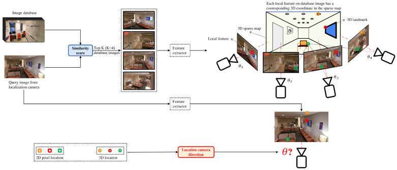
3 · Navigation
The navigable graph uses reference-image locations as nodes. An edge joins two nodes when no wall or boundary lies between them. Dijkstra's algorithm (below) finds the shortest path to the selected destination. The user is first directed to the nearest graph node, then along the path. The user receives auditory or vibration instructions (spoken prompts through a binaural bone-conduction headset) and can give vocal commands through its microphone. Query images come either from an Android app (the user taps the screen, or the app captures at a time interval) or from a camera on a backpack-mounted NVIDIA Jetson AGX Xavier. [4]
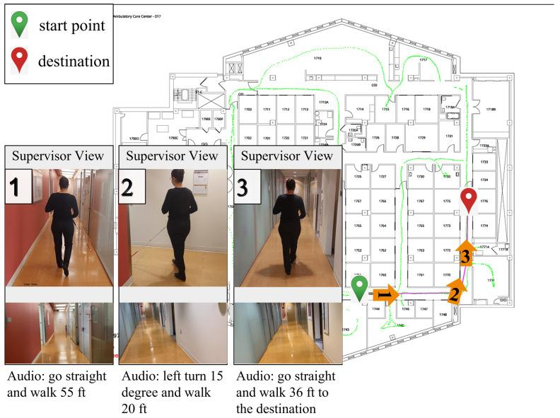
Technical deep dive: the PnP problem shared by both systems (optional)
PnP in one paragraph (used by both approaches)
A pinhole camera maps a 3D point X to pixel x by s·x = K [R | t] X, where K holds the intrinsics (focal length, principal point) and R, t are the unknown rotation and translation. Given n ≥ 3 known 2D–3D pairs, a PnP solver estimates R and t. P3P uses exactly three pairs and returns up to four candidate solutions, so a fourth point picks the right one. Practical implementations commonly wrap the solver in RANSAC to reject wrong matches and refine by minimizing reprojection error Σ‖xᵢ − π(K, R, t, Xᵢ)‖². In the QR approach, the 2D–3D pairs come from the four surveyed corners of a QR code. In UNav, they come from hundreds of SuperPoint matches against the 3D map. The geometry is the same; only the source of the correspondences differs. [4] [3]
Required algorithm example: Dijkstra shortest path
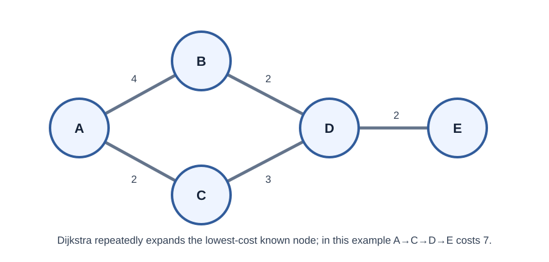
A building map can be represented as a graph: nodes are navigable locations or intersections and edges are possible movements. Edge weights can represent distance. Dijkstra's algorithm finds the lowest-cost path from the current node to the destination when edge weights are non-negative.
DIJKSTRA(graph, start):
distance[start] ← 0
distance[all other nodes] ← ∞
put all nodes in a priority queue
while queue is not empty:
u ← node with smallest known distance
for each neighbor v of u:
newDistance ← distance[u] + weight(u, v)
if newDistance < distance[v]:
distance[v] ← newDistance
previous[v] ← u
return distance, previousWorked trace on Figure 15 (start A, goal E)
| Step | Node removed from queue | Distances after relaxing its edges (A, B, C, D, E) |
|---|---|---|
| 0 | — | 0, ∞, ∞, ∞, ∞ |
| 1 | A (0) | 0, 4, 2, ∞, ∞ |
| 2 | C (2) | 0, 4, 2, 5, ∞ |
| 3 | B (4) | 0, 4, 2, 5, ∞ (B→D gives 6 > 5, no update) |
| 4 | D (5) | 0, 4, 2, 5, 7 |
| 5 | E (7) | goal reached; following previous back gives E ← D ← C ← A |
Runnable Python implementation (optional)
Runnable Python version
This is a minimal implementation with a binary heap, which you can paste into Python 3 to reproduce the trace. In a navigation system, the graph would come from the QR map's node/edge tables or from UNav's reference-image graph, with edge weights in metres.
import heapq
def dijkstra(graph, start, goal):
dist = {n: float("inf") for n in graph}
prev = {}
dist[start] = 0
pq = [(0, start)] # (distance, node)
while pq:
d, u = heapq.heappop(pq)
if d > dist[u]: # stale queue entry
continue
if u == goal:
break
for v, w in graph[u].items():
nd = d + w
if nd < dist[v]:
dist[v], prev[v] = nd, u
heapq.heappush(pq, (nd, v))
path = [goal]
while path[-1] != start:
path.append(prev[path[-1]])
return dist[goal], path[::-1]
graph = {"A": {"B": 4, "C": 2}, "B": {"A": 4, "D": 2},
"C": {"A": 2, "D": 3}, "D": {"B": 2, "C": 3, "E": 2},
"E": {"D": 2}}
print(dijkstra(graph, "A", "E")) # (7, ['A', 'C', 'D', 'E'])Complexity: with a binary heap, Dijkstra runs in O((V + E) log V). That is negligible for building-scale graphs of hundreds to thousands of nodes, Our observation: this is why route planning is not the bottleneck in either system; image-based localization is.
The previous links reconstruct the route. In a real indoor system, localization tells the planner which node is closest to the user; the selected destination identifies the goal node. UNav explicitly uses Dijkstra's algorithm to connect the current location to a destination. [4]
When would we prefer each?
The following guidance is our reasoned comparison, built from the deployment requirements and results reported in [3], [4] and [5]. It is not a claim made by either set of authors.
| Situation | Better fit | Why |
|---|---|---|
| Building owner cooperates; codes can be installed and maintained | QR + IMU | Cheap printed markers give unambiguous, decimetre-level fixes with very light computation. |
| Long, featureless or repetitive corridors | QR + IMU | Explicit codes avoid perceptual aliasing, and PDR fills the gaps between codes. |
| Navigation provider does not control the walls, or markers would be too many to maintain | UNav-style VPR | No dedicated infrastructure; the map comes from a camera walkthrough. The UNav authors note that installed infrastructure can be costly, may need planning permission, competes for wall space and needs maintenance [5]. |
| Large multi-building campus, frequent remapping | UNav-style VPR | Mapping takes about as long as walking the routes, and the map can evolve from query images. |
| Poor or no network coverage | QR + IMU (or on-device UNav) | QR pose and PDR run locally. Server-based UNav depends on connectivity, although an offline Jetson mode exists. |
| Blind user who cannot easily aim a phone at a wall code | UNav (chest camera) | A forward-facing wearable sees natural scenery continuously. QR detection required being within about 2 m of the code. |
Neither approach dominates. A practical hybrid could use natural-image VPR for global localization and occasional markers or PDR to bridge visually ambiguous stretches.